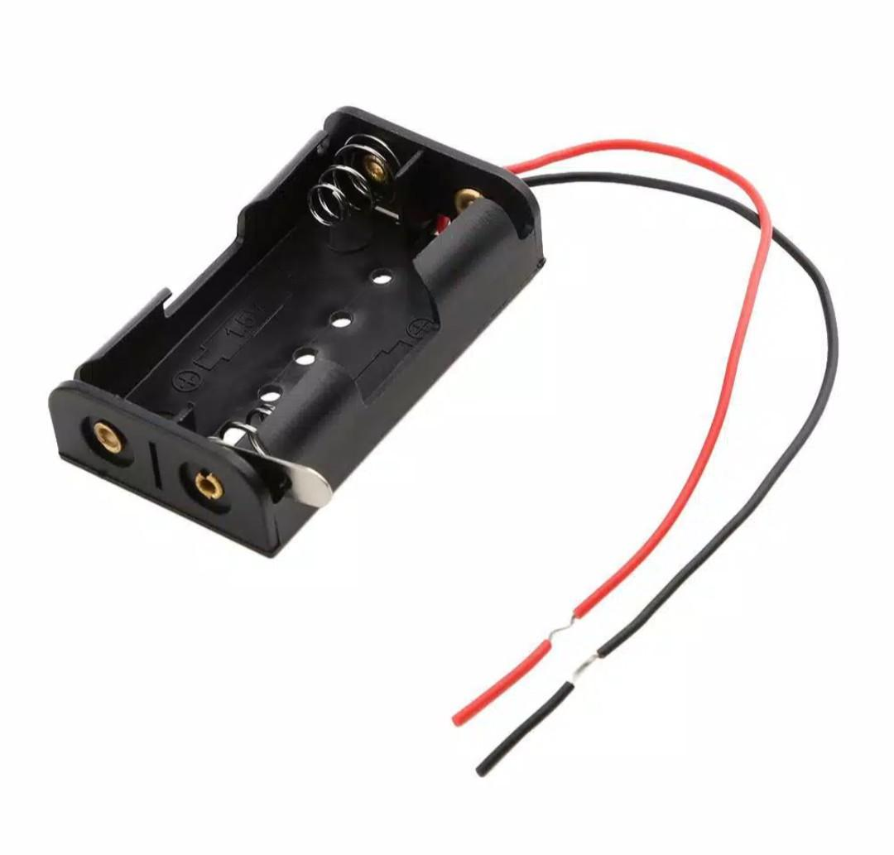
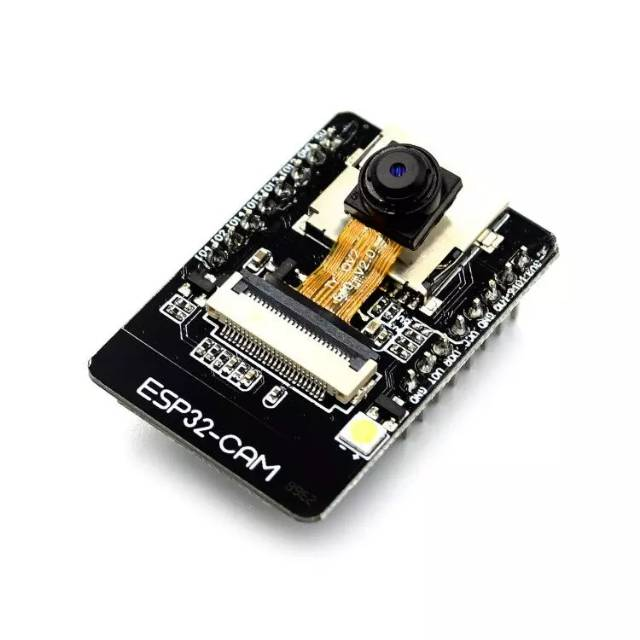
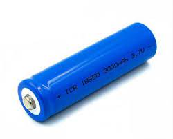
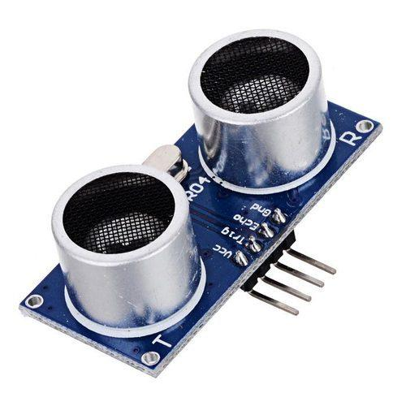

ALat & Bahan

Arduino Uno
Arduino Uno adalah papan mikrokontroler open-source yang sangat populer dan banyak digunakan dalam proyek-proyek elektronik dan robotika. Papan ini dikembangkan oleh tim Arduino dan didasarkan pada mikrokontroler ATmega328P yang diproduksi oleh perusahaan Microchip Technology (sebelumnya Atmel Corporation).

Kotak Baterai
Fungsi utama dari kotak baterai adalah untuk menyediakan tempat yang aman dan terorganisir untuk baterai, serta melindungi baterai dari benturan atau kerusakan fisik yang dapat terjadi dalam penggunaan sehari-hari. Selain itu, kotak baterai juga berfungsi untuk melindungi pengguna dari kontak langsung dengan terminal baterai yang dapat menyebabkan luka atau kecelakaan.

ESP 32
ESP32-CAM adalah sebuah modul yang berbasis pada chip ESP32 yang memiliki kemampuan kamera. Modul ini dikembangkan oleh Espressif Systems dan telah menjadi populer karena memudahkan pengguna untuk mengintegrasikan fungsi kamera ke dalam proyek-proyek IoT dan DIY.

Sensor Debu
Sensor debu adalah perangkat elektronik yang dirancang untuk mendeteksi keberadaan debu atau partikel halus dalam suatu lingkungan. Sensor ini bekerja dengan cara mendeteksi perubahan atau gangguan yang disebabkan oleh debu pada permukaan sensor. Ketika partikel debu melekat pada sensor, hal itu dapat mengubah sinyal atau respons sensor. Sensor debu sering digunakan dalam berbagai aplikasi, termasuk di dalam peralatan elektronik seperti kamera digital, komputer, dan perangkat elektronik lainnya. Mereka juga dapat digunakan dalam sistem HVAC (Heating, Ventilation, and Air Conditioning) untuk mengawasi kualitas udara dan memberikan informasi penting untuk menjaga lingkungan yang bersih dan sehat. Dengan mendeteksi keberadaan debu, sensor ini dapat membantu dalam menjaga kinerja perangkat elektronik dan menjaga kualitas udara di berbagai lingkungan.

Baterai
Baterai adalah perangkat yang mengandung sel-sel kimia yang dapat menghasilkan energi listrik melalui reaksi kimia yang berlangsung di dalamnya. Baterai merupakan sumber daya portabel yang banyak digunakan dalam berbagai perangkat elektronik, kendaraan, dan aplikasi lainnya untuk menyediakan pasokan daya.

Motor DC
Motor DC (Direct Current) adalah jenis motor listrik yang menggunakan arus searah untuk menghasilkan gerakan. Motor DC bekerja berdasarkan prinsip induksi elektromagnetik, di mana medan magnet yang dihasilkan oleh arus listrik di dalam kumparan menghasilkan gaya yang menyebabkan motor berputar.

ultrasonic
Sensor ultrasonik adalah jenis sensor yang menggunakan gelombang ultrasonik untuk mendeteksi jarak atau mengukur jarak antara sensor dan suatu objek. Gelombang ultrasonik adalah gelombang suara yang memiliki frekuensi di atas batas pendengaran manusia, yaitu di atas 20 kilohertz (kHz)